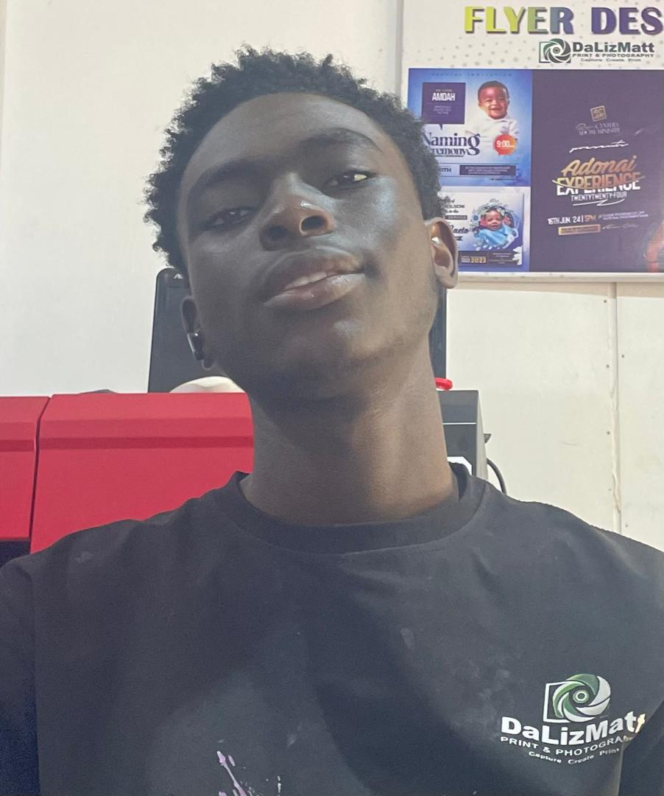
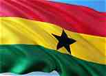

About mE

Hello! My name is Osei-Bonsu Jeffrey Gyamfi 😇, and I go by "mE" or JusT mE. I was born in Ghana, a beautiful country in West Africa known for its rich culture, traditions, and friendly people. I am currently not working, but I am using this time to focus on learning new skills and developing myself.

Ghana is a beautiful country located in West Africa, bordered by Côte d'Ivoire to the west, Burkina Faso to the north, Togo to the east, and the Atlantic Ocean to the south. Its capital city is Accra. Ghana gained independence from British colonial rule on March 6, 1957, becoming the first country in sub-Saharan Africa to achieve independence